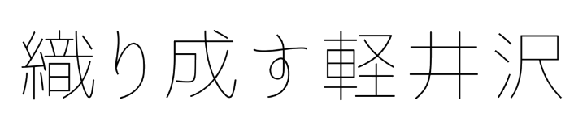

ABOUT
MEMBERS
PROJECTS
NEWS
CONTACT
寄付/DONATION
MEMBERS

山崎 元
GEN YAMAZAKI
NPO法人織り成す軽井沢代表理事。自然に囲まれた環境に住みたいと思
い軽井沢に15年目、コロナで地元で過ごす時間が増えるにつれ、住んで
いる町にもっとコミットしたいという思いが高まる。趣味は屋外調理、
スキー、草刈り、SF小説。人生の目標は芸術家になること。一般社団法
人森のようちえんぴっぴ理事、株式会社ビームス上席執行役員。#中軽
井沢のシャッターを全部開ける #地方創生 #publicbar
#smokemanship
鴨崎 貴泰
TAKAYASU KAMOZAKI
NPOや社会的企業の資金調達（ファンドレイジング）と社会的インパク
ト評価・マネジメントが主な活動領域。持続可能な地域づくりに関心が
あり、教育、医療、福祉を核にした実験的な地域づくりの胎動を感じて
軽井沢へ移住。その他、福祉×農業「ノウフク」の推進にも従事し、ノ
ウフクJAS検査員としても活動中。当面、国内外５拠点くらいで仕事と
生活をする「旅するように生きていく」ライフスタイルを画策中。
藤岡 聡子
SATOKO FUJIOKA
NPO法人織り成す軽井沢 副理事。福祉環境設計士。軽井沢町・診療所
と大きな台所があるところ ほっちのロッヂ共同代表。1985年生まれ
徳島県生まれ三重県育ち / 長野県軽井沢町在住 / 夜間定時制高校出身。
アート、馬との暮らし、本、人と人の間に入ると面白そうな表現活動と
出会うのが好き。 共著に『ケアとまちづくり、ときどきアート(2020
中外医学社)』『社会的処方(2019学芸出版社)』
山本 裕介
YUSUKE YAMAMOTO
外資系IT企業でコーポレートブランディングを担当。2016年より北海
道・オホーツクエリアを皮切りに徳島の神山町・上勝町、長崎の五島列
島、鹿児島の奄美大島など5年間で全国15ヶ所以上で子連れリモートワ
ークをして半2拠点生活をした後、軽井沢に移住。
大野 和彦
KAZUHIKO OONO
Meinhardt Japan株式会社 CEO、bePower4 LLC Founder、群馬
県高崎市生まれ。長年、商社で海外（ブラジル、イギリスなど）のイン
フラ投資や事業再生に携わってきました。人生の後半戦に差し掛かり、
ビジネスは続けつつも、これまでの知識や経験をなにかしらの形で地域
に還元できればハッピーだなという思いで、織り成す軽井沢の活動に取
り組んでいます！
遠藤 理恵
RIE ENDO
株式会社セールスフォース ・ドットコム 執行役員 サステナビリティ
＆コーポレートリレーション担当